Dato
El CRM reemplaza el control en Excel. Toda la información se registra directamente en el sistema y el Informe semanal permite descargar el formato FOR-VEN-001 cuando se necesite.
01 · Primeros pasos
Empieza en pocos minutos
Aprende a ingresar, proteger tu cuenta y ubicar las funciones principales.
1.1 Ingresar al sistema
Abre en el navegador la dirección del CRM que te entregue el área de Sistemas.
Escribe tu correo corporativo y tu contraseña.
Pulsa Ingresar. Si es tu primer acceso, el sistema te pedirá crear una contraseña definitiva (mínimo 8 caracteres, con letras y números).
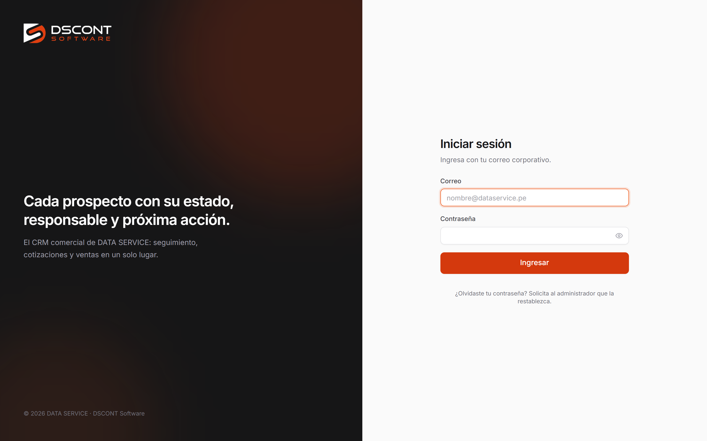
Figura 1. Pantalla de inicio de sesión. Usa siempre tu cuenta personal; no compartas la contraseña.
Importante
Si olvidaste tu contraseña, solicita al administrador del CRM que la restablezca. Por seguridad, el sistema te obligará a cambiarla en el siguiente ingreso.
1.2 Cambiar la contraseña y cerrar sesión
Haz clic en tu avatar (esquina superior derecha) para abrir el menú de usuario:
Cambiar contraseña: actualiza tu clave cuando lo necesites.
Cerrar sesión: sal del sistema, especialmente en equipos compartidos.
1.3 Conocer la pantalla
La navegación principal está en la barra lateral izquierda. Los módulos que ves dependen de tu rol y permisos:
Consejo
Puedes contraer el menú con el botón inferior de la barra lateral para ganar espacio de trabajo. El menú se expande de nuevo con el mismo botón.
Sección
Qué encuentras
Inicio
Resumen diario: tareas, seguimientos y prospectos que requieren atención.
Prospectos
Listado y ficha completa de personas naturales y jurídicas.
Tareas
Agenda de actividades: hoy, próximas, vencidas y completadas.
Pipeline
Tablero visual de oportunidades por etapa de venta.
Cotizaciones
Propuestas comerciales y su estado.
Informe semanal
Indicadores de ventas y descarga del Excel FOR-VEN-001.
Alertas
Avisos automáticos de seguimiento y oportunidades.
Dashboard gerencial
Métricas del equipo y del negocio (según permisos).
Catálogo → Productos
Productos y servicios con precios vigentes.
Administración
Usuarios, roles, catálogos, configuración y auditoría.
1.4 Usar el CRM en el celular
El sistema se adapta al celular. En la parte inferior tienes accesos directos a Inicio, Prospectos y Productos; el botón Más abre el menú completo. La información es la misma que ves en la computadora.
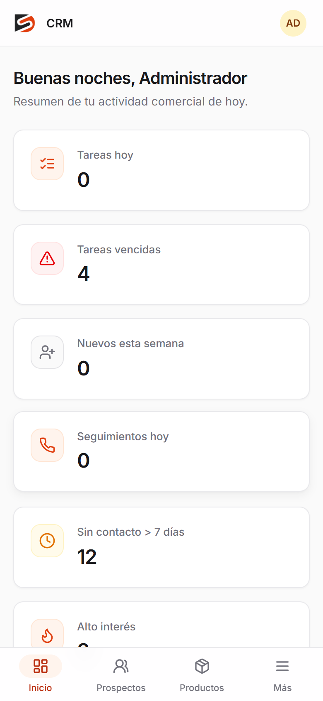
Figura 2. Navegación móvil: accesos rápidos en la barra inferior y menú completo en “Más”.
02 · Inicio
Tu resumen del día
Al ingresar verás lo que necesita tu atención hoy: tareas, seguimientos y prospectos en riesgo.
La pantalla de Inicio se divide en tres bloques: indicadores, próximas acciones y accesos rápidos. Los indicadores son clicables y llevan al listado de prospectos.
Indicador
Qué significa
Tareas hoy
Actividades programadas para la fecha actual.
Tareas vencidas
Actividades pendientes cuya fecha ya pasó. Atiéndelas primero.
Nuevos esta semana
Prospectos registrados en los últimos siete días.
Seguimientos hoy
Contactos o acciones de seguimiento programadas para hoy.
Sin contacto > 7 días
Prospectos activos que llevan más de una semana sin interacción registrada.
Alto interés
Prospectos marcados con nivel de interés alto.
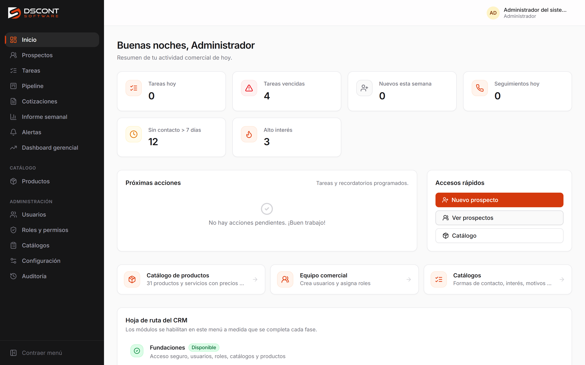
Figura 3. Inicio: indicadores del día, próximas acciones y accesos rápidos.
Consejo
Convierte la revisión de Inicio en tu primera acción del día: revisa Tareas vencidas y Sin contacto > 7 días, y programa un seguimiento para cada caso.
Dato
La sección Próximas acciones muestra tareas y recordatorios programados con un botón Ver ficha para abrir directamente al prospecto.
03 · Prospectos
El corazón del CRM
Aquí vive cada persona natural o jurídica con su estado, responsable y próxima acción.
3.1 Buscar y filtrar el listado
El buscador encuentra por nombre, correo, teléfono, documento o código. Los filtros superiores separan por estado: ActivosEn pausaDescartadosNo calificaInactivos.
Haz clic en una fila para abrir la ficha del prospecto.
Marca las casillas de varias filas para asignarlas en bloque a otro responsable.
Usa Anterior / Siguiente para moverte entre páginas.
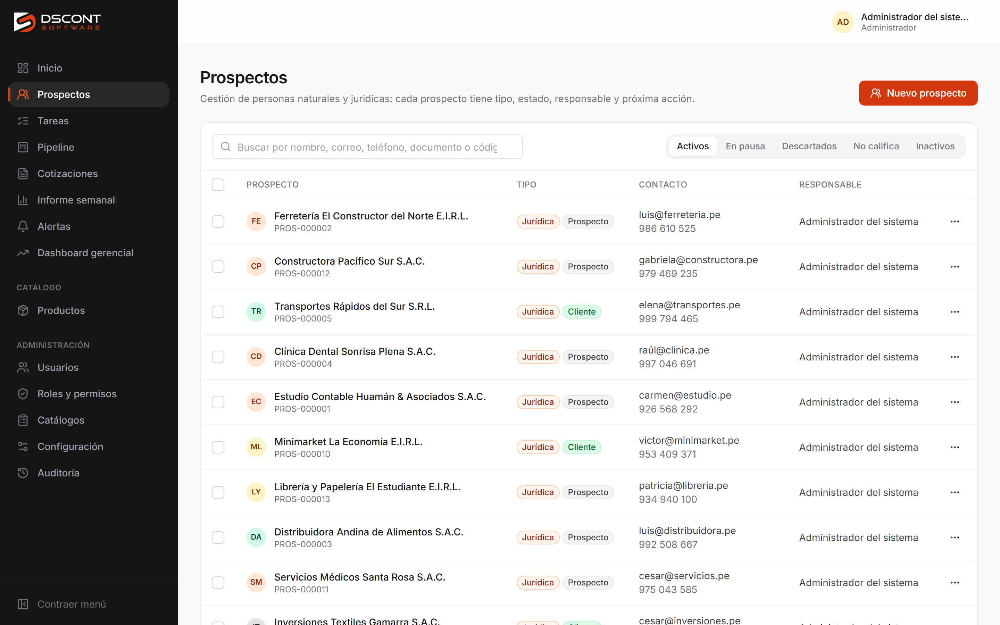
Figura 4. Listado de prospectos: búsqueda, filtros por estado, responsable y acciones por fila.
3.2 Registrar un prospecto nuevo
Pulsa Nuevo prospecto.
Elige el tipo de persona: Natural o Jurídica.
Completa los datos de identificación y contacto. Solo los campos con * son obligatorios.
Si lo deseas, agrega contactos adicionales (por ejemplo, el área de compras o el jefe directo).
Revisa la alerta de posible duplicado si aparece y pulsa Crear prospecto.
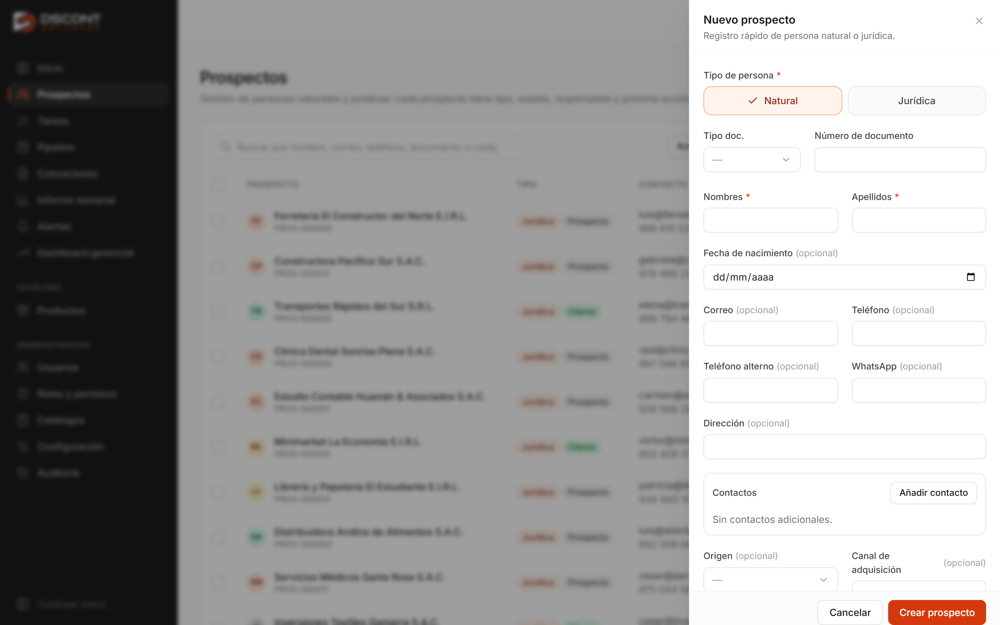
Figura 5. Formulario de registro. El sistema advierte si detecta un nombre o documento parecido.
Campos que conviene completar siempre
Campo
Para qué sirve
Documento (DNI/RUC)
Identifica de forma única y evita duplicados.
Correo y teléfono
Permiten el contacto y la búsqueda rápida.
Origen y canal
Explican de dónde llegó el prospecto (web, referido, campaña, etc.).
Nivel de interés y prioridad
Ayudan a ordenar el trabajo y alimentan las alertas.
Responsable
Define quién da seguimiento al prospecto.
Notas
Contexto útil para cualquier persona del equipo.
Importante
Antes de crear un prospecto, búscalo por documento o nombre. Registrar duplicados fragmenta el historial y complica los reportes.
3.3 La ficha del prospecto
La ficha reúne todo el historial comercial en pestañas. La cabecera muestra el nombre, código, tipo de persona, si es Prospecto o Cliente, y su estado.
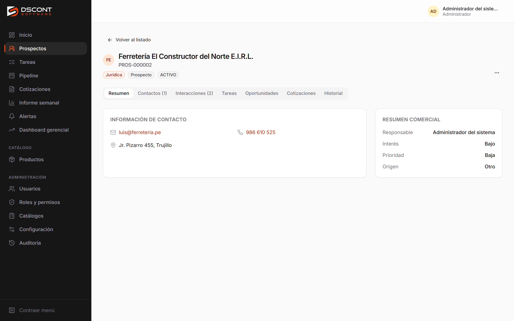
Figura 6. Ficha del prospecto. El menú ⋯ permite editar, asignar, cambiar estado o eliminar.
Pestaña
Qué contiene
Resumen
Datos de contacto, notas y resumen comercial (responsable, interés, prioridad, origen).
Contactos
Personas de la empresa; la marcada como Principal es el contacto habitual.
Interacciones
Historial de llamadas, correos, reuniones y mensajes.
Tareas
Actividades y recordatorios del prospecto.
Oportunidades
Negociaciones abiertas y su etapa en el pipeline.
Cotizaciones
Propuestas enviadas, aceptadas o rechazadas.
Historial
Cambios de responsable y de estado, con fecha y motivo.
3.4 Registrar una interacción
Cada contacto con el prospecto debe quedar registrado. Entra a la pestaña Interacciones y pulsa Registrar.
Indica el canal (llamada, correo, WhatsApp, reunión, etc.) y la modalidad.
Selecciona el resultado del contacto y el nivel de interés observado.
Escribe una nota breve con lo conversado y el siguiente paso acordado.
Guarda. El sistema numera el intento automáticamente.
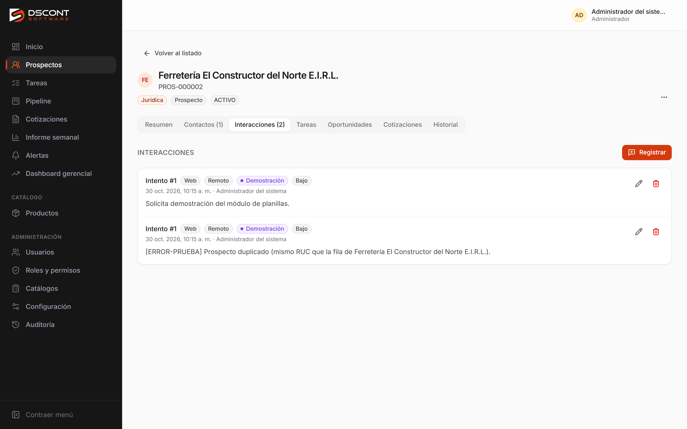
Figura 7. Pestaña Interacciones: cada registro conserva canal, resultado, interés, autor y fecha.
Consejo
Registra la interacción el mismo día. Una nota concreta (“pidió propuesta de 10 licencias para el 15”) vale más que diez llamadas sin contexto.
3.5 Asignar, cambiar de estado y eliminar
Desde el menú ⋯ de la fila o de la ficha:
Editar: actualiza los datos del prospecto.
Asignar: transfiere el prospecto a otro responsable. Puedes dejar un motivo para que quede en el historial.
Cambiar estado: pasa a Activo, En pausa, Descartado, No califica o Inactivo. El sistema pide un motivo.
Eliminar: retira el prospecto del listado. La eliminación es lógica: el registro se conserva para auditoría, pero deja de mostrarse.
Importante
Cambiar el estado no borra el historial. Si un prospecto se retoma, vuelve a Activo y continúa donde quedó. Si necesitas recuperar un registro eliminado, solicita apoyo al administrador.
04 · Pipeline de ventas
Visualiza tus oportunidades
Cada oportunidad avanza por etapas. Arrastra la tarjeta para reflejar en qué punto está la negociación.
El tablero muestra una columna por etapa. En la cabecera de cada columna ves la cantidad de oportunidades y, al pie, el monto estimado total.
Etapa
Cuándo usarla
Nuevo
Oportunidad identificada, aún sin contacto formal.
Cotización
Se está preparando o enviando la propuesta.
Negociación
El cliente revisa condiciones, precios o alcance.
Cerrado ganado
La venta se concretó.
Cerrado perdido
La oportunidad se perdió; registra el motivo.
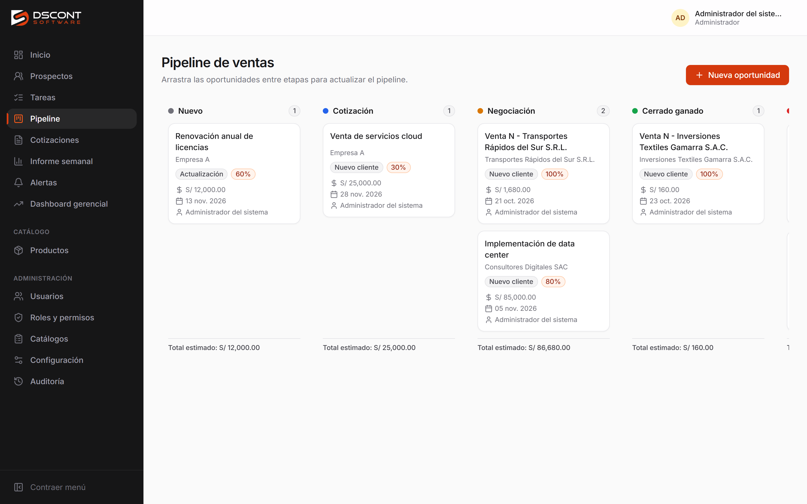
Figura 8. Pipeline: arrastra una tarjeta entre columnas para actualizar la etapa de la oportunidad.
Consejo
Mueve una tarjeta solo cuando la etapa refleje la realidad. Si una oportunidad se estanca, registra una tarea de seguimiento en lugar de moverla sin avance.
4.1 Crear una oportunidad
Abre la ficha del prospecto y entra a la pestaña Oportunidades.
Pulsa Nueva oportunidad.
Escribe un título claro (por ejemplo, “Renovación anual de licencias 2027”).
Selecciona la etapa, el tipo y, si aplica, el responsable.
Completa el monto estimado, la probabilidad y la fecha de cierre esperada.
Guarda. La oportunidad aparecerá en el pipeline y en la ficha del prospecto.
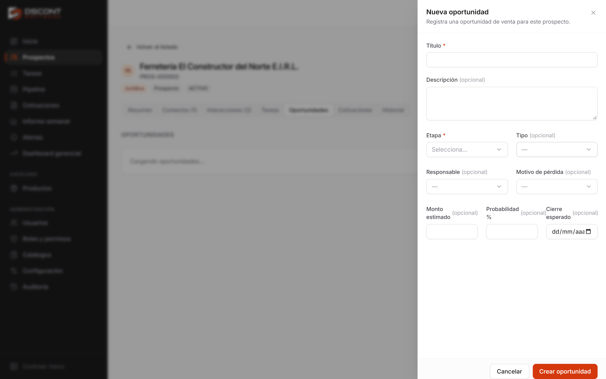
Figura 9. Nueva oportunidad desde la ficha del prospecto. Así queda siempre vinculada a un cliente.
Consejo
Crea la oportunidad desde la ficha del prospecto para que quede correctamente vinculada. En el pipeline puedes moverla de etapa, editarla o eliminarla.
Dato
La probabilidad es una estimación comercial, no un cálculo automático. Ayuda a priorizar y a leer el pipeline con realismo.
05 · Tareas y recordatorios
Que ningún seguimiento se pierda
Organiza tu día y da seguimiento a cada prospecto con actividades concretas y fechadas.
La pantalla de Tareas agrupa las actividades en cuatro pestañas: Hoy, Próximas, Vencidas y Completadas.
Marca el círculo a la izquierda para completar una tarea; vuelve a pulsarlo para reabrirla.
Usa Editar para cambiar fecha, responsable o prioridad.
Usa el ícono de papelera para eliminar una tarea.
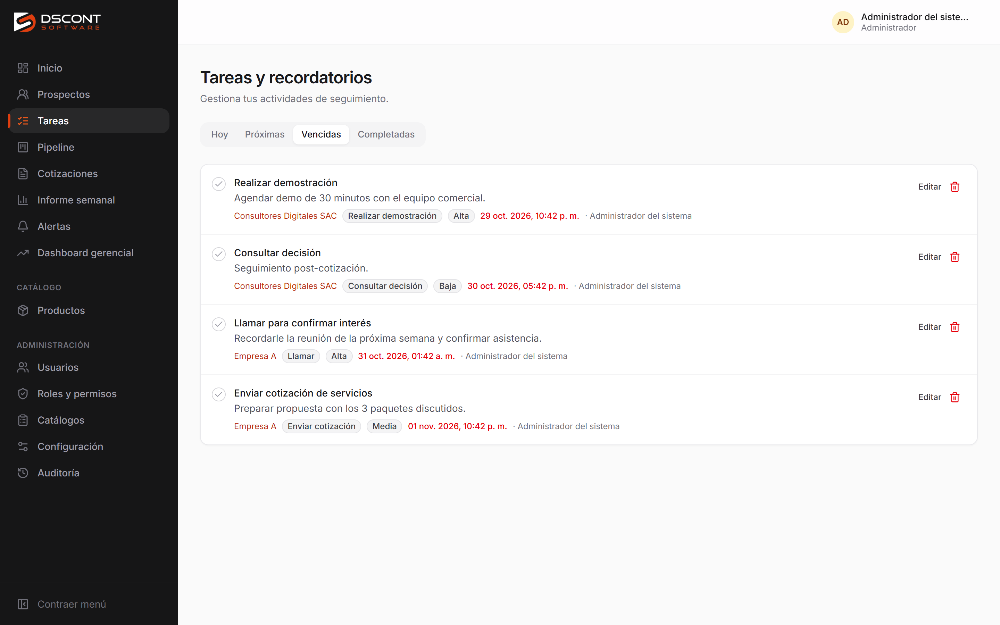
Figura 10. Tareas: pestañas por vencimiento, enlace al prospecto y acciones para editar o eliminar.
5.1 Crear una tarea
La forma más ordenada es crearla desde la ficha del prospecto, pestaña Tareas. También puedes crear tareas desde el listado general.
Campo
Recomendación
Título
Empieza con un verbo: “Llamar para confirmar propuesta”.
Descripción
Agrega el contexto necesario para retomarla sin releer todo.
Responsable
Asigna a quien realmente hará la tarea.
Tipo y prioridad
Ayudan a filtrar y a ordenar el trabajo.
Fecha de vencimiento
Sin fecha, la tarea no aparece en “Hoy” ni en “Vencidas”.
Recordatorio
Define cuándo quieres que el sistema te avise.
Consejo
Toda interacción debería terminar con una próxima acción con fecha.
06 · Cotizaciones
De la propuesta a la venta
Crea propuestas con productos del catálogo y controla su estado hasta el cierre.
Las cotizaciones se organizan por estado:
Estado
Significado
Borrador
Propuesta en preparación; todavía no se envió.
Enviada
Ya se compartió con el cliente y se espera respuesta.
Aceptada
El cliente aprobó la propuesta. El prospecto pasa a Cliente automáticamente.
Rechazada
El cliente no aceptó. Registra el motivo para aprender y dar seguimiento.
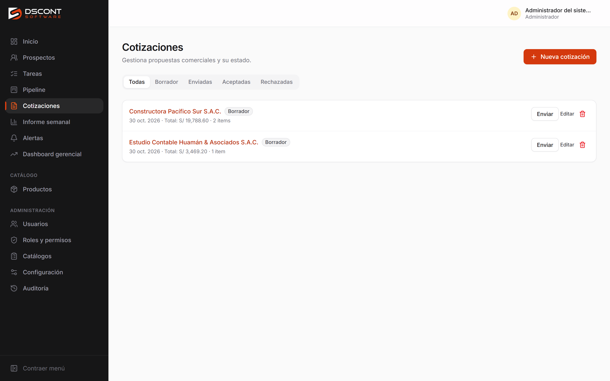
Figura 11. Cotizaciones: filtros por estado y acciones para enviar, aceptar, rechazar, editar o eliminar.
6.1 Crear una cotización
Abre la ficha del prospecto y entra a la pestaña Cotizaciones.
Pulsa Nueva cotización.
Revisa la fecha de emisión y, si aplica, la fecha de validez.
Agrega los ítems: producto, descripción, cantidad y precio unitario.
Agrega notas para el cliente y guarda.
Desde el listado, usa Enviar cuando la propuesta salga y Aceptar o Rechazar cuando el cliente responda.
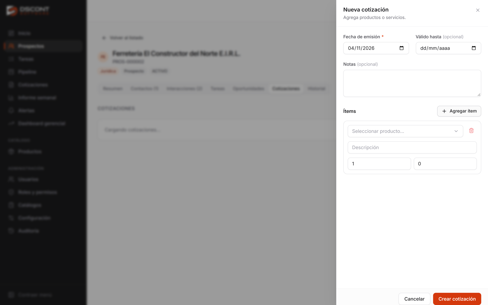
Figura 12. Nueva cotización: fechas, notas e ítems tomados del catálogo de productos.
Importante
Al marcar una cotización como Aceptada, el prospecto se convierte en Cliente y deja de aparecer como prospecto en los filtros habituales. Es el paso que formaliza la venta en el CRM.
Consejo
Mantén los estados al día. Un tablero con cotizaciones “Enviadas” de hace meses deja de ser útil para tomar decisiones.
07 · Informe semanal
Los números, sin armar Excel
Consulta los indicadores del día y del mes, y descarga el formato oficial cuando lo necesites.
Selecciona una fecha y el sistema calcula los indicadores para ese día y su acumulado mensual:
Cotizaciones: cantidad emitida hoy y en el mes.
Ventas totales: monto vendido hoy y en el mes.
Ventas de actualización y ventas nuevas: separadas para analizar el tipo de ingreso.
Nuevos clientes: prospectos convertidos en clientes.
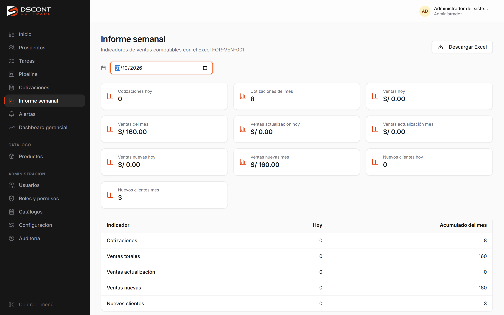
Figura 13. Informe semanal con indicadores del día, acumulado del mes y descarga en Excel.
Descarga
Pulsa Descargar Excel para obtener el archivo con el formato FOR-VEN-001. Úsalo para reportes internos o reuniones de gerencia.
Dato
El informe se alimenta de lo registrado en el CRM: cotizaciones, ventas y conversiones. Si un dato no aparece, revisa que la cotización o venta esté correctamente registrada y con la fecha correspondiente.
08 · Alertas
El sistema te avisa qué atender
Alertas automáticas para que ningún prospecto quede olvidado ni ninguna cotización venza sin respuesta.
Las alertas se agrupan por estado (sin leer, leídas, descartadas) y por severidad (crítica, alta, media, baja). Los tipos más comunes son:
Tipo de alerta
Cuándo aparece
Sin primer contacto
El prospecto se registró pero aún no tiene interacciones.
Sin seguimiento
Pasaron varios días desde el último contacto registrado.
Cotización por vencer
La propuesta está cerca de su fecha de vencimiento.
Cotización sin respuesta
Se envió y el cliente no respondió en el plazo esperado.
Prospecto estancado
No avanza de etapa en el pipeline.
Oportunidad de alto valor
El monto estimado supera el umbral configurado.
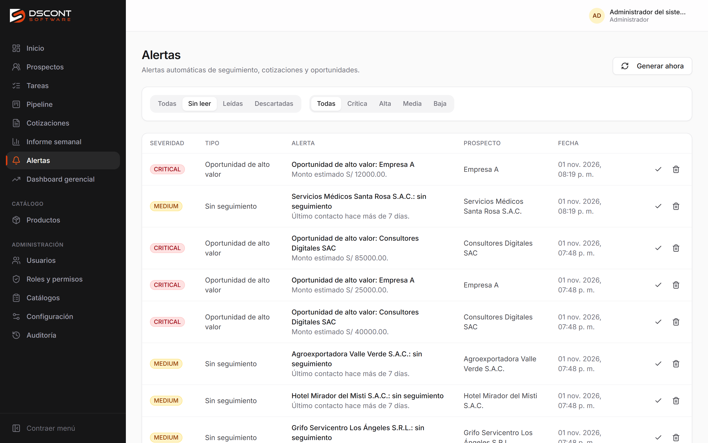
Figura 14. Alertas: filtros por estado y severidad, marca como leída y descarta las que ya atendiste.
Consejo
Revisa tus alertas sin leer al empezar el día. Marca como leída solo cuando hayas actuado; descarta únicamente las que no aplican.
Dato
Si tienes permisos, el botón Generar ahora recalcula las alertas con la información más reciente. El sistema también las genera de forma automática.
09 · Productos
El catálogo a mano
Consulta productos, servicios y precios vigentes antes de cotizar.
El catálogo se filtra por categoría con los botones superiores y por nombre o código con el buscador. Cada producto muestra su código, tipo, periodicidad de cobro y precio final.
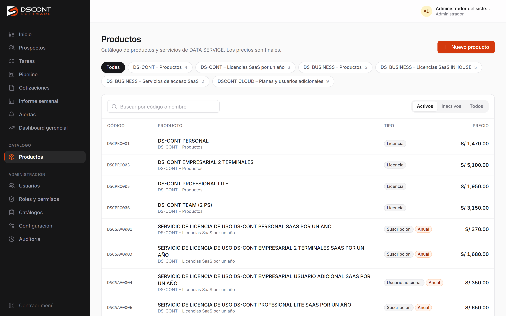
Figura 15. Catálogo de productos: categorías, búsqueda y precio vigente. Los precios son finales.
Precio final en soles. Un producto gratuito se muestra como Gratis.
Dato
Solo los usuarios con permiso de gestión de productos pueden crear o editar ítems del catálogo. Si necesitas un cambio de precio, solicítalo al administrador.
Consejo
Al cotizar, elige el producto desde el catálogo en lugar de escribir el precio a mano. Así mantienes coherencia entre propuestas e informes.
10 · Dashboard gerencial
Visión del negocio y del equipo
Indicadores consolidados para gerencia: ventas, conversión, pipeline y rendimiento.
Este tablero está pensado para reuniones de gestión. Muestra:
Bloque
Qué responde
Ventas este mes
Monto vendido y comparación con el mes anterior.
Nuevos clientes
Clientes ganados en el mes frente al mes previo.
Tasa de conversión
Prospectos convertidos en clientes sobre el total.
Pipeline total
Monto estimado y cantidad de oportunidades activas.
Pipeline por etapa
Distribución de oportunidades y montos por etapa.
Top vendedores
Ranking por ventas cerradas en el mes.
Top productos cotizados
Productos más cotizados por monto.
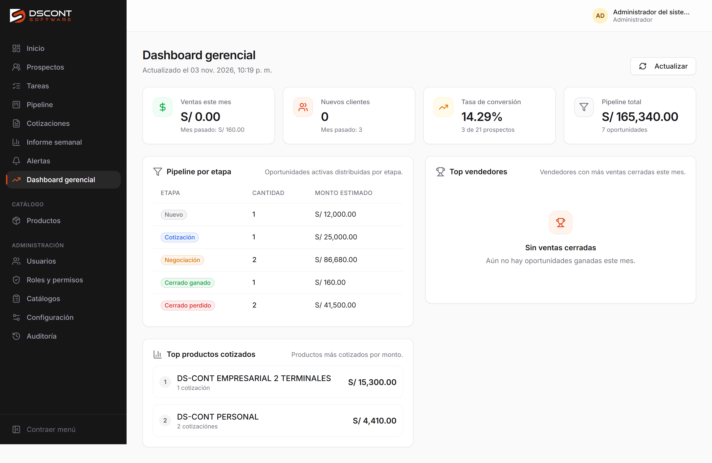
Figura 16. Dashboard gerencial: ventas, conversión, pipeline, mejores vendedores y productos.
Dato
El botón Actualizar recalcula las métricas con la información más reciente. La fecha y hora de generación aparece bajo el título.
11 · Administración
Configura el CRM a tu medida
Estas pantallas están disponibles según tu rol. Si no ves alguna, solicita los permisos al administrador.
11.1 Usuarios
Crea las cuentas del equipo, asigna su rol y controla el acceso. Los usuarios no se eliminan: se desactivan, y su historial se conserva.
Nuevo usuario: nombre, correo corporativo y rol.
Editar: actualiza datos o rol.
Desactivar / Reactivar: bloquea o devuelve el acceso. Al desactivar se cierran sus sesiones activas.
Estado: activo, inactivo o pendiente de ingreso (cuando aún no define su contraseña).
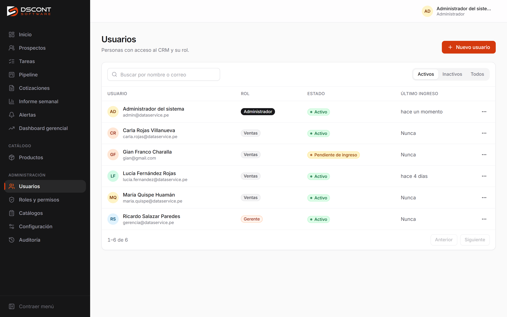
Figura 17. Usuarios: rol, estado y último ingreso. El menú de cada fila permite editar o desactivar.
11.2 Roles y permisos
Cada rol define qué módulos y acciones puede usar una persona. El sistema incluye tres roles base: Administrador, Gerente y Ventas.
Selecciona un rol en la lista de la izquierda.
Marca o desmarca los permisos en la matriz de la derecha.
Pulsa Guardar en la barra que aparece. Los cambios se aplican cuando el usuario renueva su sesión.
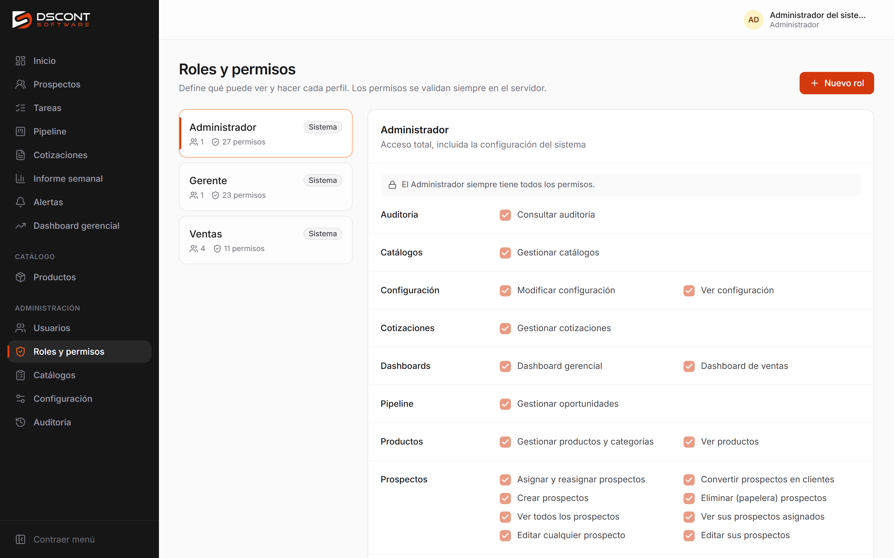
Figura 18. Roles y permisos: matriz por módulo. El rol Administrador siempre conserva todos los permisos.
Importante
La interfaz solo oculta acciones; el servidor valida cada permiso. Un permiso mal asignado puede impedir que una persona vea o edite información que necesita.
11.3 Catálogos
Los catálogos alimentan los formularios y filtros: etapas del pipeline, formas de contacto, motivos de pérdida, niveles de interés, prioridades, tipos de tarea y más.
Elige el catálogo en la lista de la izquierda.
Agrega una opción con Agregar opción, o edítala con el lápiz.
Ordena con las flechas; el orden se refleja en los formularios.
Las opciones con candado son del sistema y no se pueden borrar.
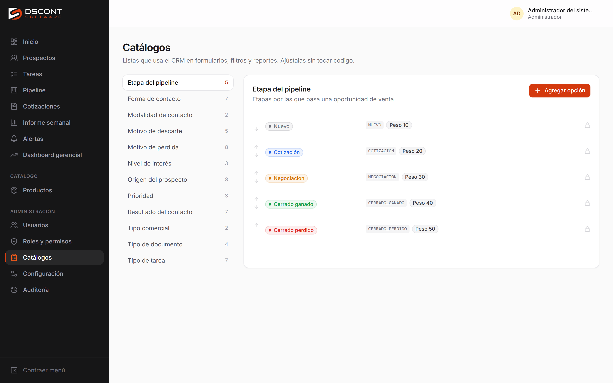
Figura 19. Catálogos: opciones, orden y peso. Las etapas del pipeline incluyen un peso para el pronóstico.
11.4 Configuración
Agrupa los parámetros generales y las reglas del CRM:
Grupo
Qué configura
General
Nombre de la empresa, moneda y zona horaria.
Prospectos
Unicidad del documento (DNI/RUC) y similitud mínima para advertir duplicados por nombre.
Alertas y seguimiento
Umbrales de días sin contacto, cotizaciones por vencer y oportunidades de alto valor.
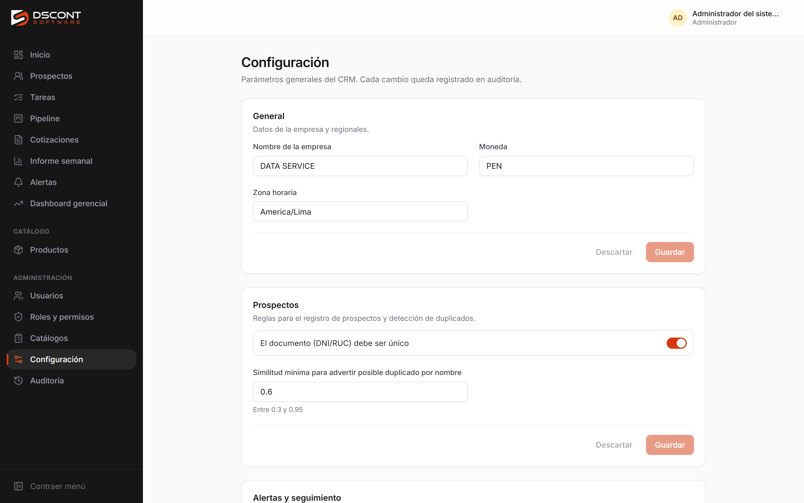
Figura 20. Configuración: parámetros generales y reglas de prospectos y alertas.
11.5 Auditoría
Registra las acciones importantes del sistema: quién hizo qué y cuándo. Es útil para investigar cambios, recuperar contexto y cumplir controles internos.
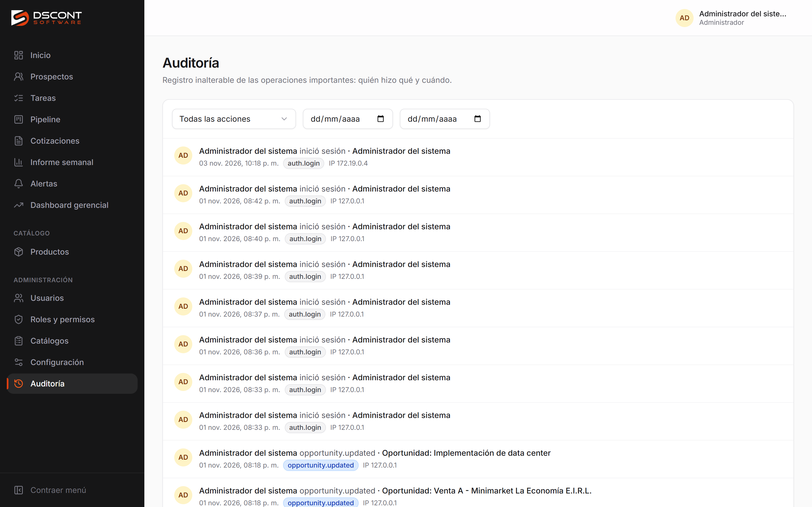
Figura 21. Auditoría: historial de cambios con usuario, acción, entidad y fecha.
12 · Buenas prácticas y preguntas frecuentes
Trabaja con orden
Pequeños hábitos diarios mantienen el CRM confiable y útil para todo el equipo.
12.1 Rutina diaria recomendada
Revisa Inicio: tareas vencidas y prospectos sin contacto.
Atiende las alertas sin leer y marca como leídas las que ya gestionaste.
Registra cada interacción del día con su próxima acción y fecha.
Actualiza el pipeline cuando una oportunidad cambie de etapa.
Antes de cerrar el día, completa o reprograma las tareas pendientes.
12.2 Rutina semanal
Revisa el Informe semanal y descarga el Excel si corresponde.
Depura prospectos en pausa o descartados con su motivo.
Actualiza cotizaciones enviadas: aceptadas, rechazadas o por vencer.
Verifica que las oportunidades tengan monto y fecha de cierre realistas.
12.3 Preguntas frecuentes
Pregunta
Respuesta
¿Puedo importar el Excel anterior?
No. El CRM está diseñado para reemplazar el Excel: la información se registra directamente en el sistema. El formato FOR-VEN-001 se descarga desde Informe semanal.
¿Olvidé mi contraseña, qué hago?
Solicita al administrador que la restablezca. En el siguiente ingreso deberás crear una nueva.
¿Por qué no veo un módulo?
Tu rol no tiene ese permiso. Pide al administrador que lo revise en Roles y permisos.
¿Puedo recuperar un prospecto eliminado?
La eliminación es lógica y el registro se conserva para auditoría. Solicita apoyo al administrador.
¿Cómo paso un prospecto a cliente?
Registra y marca una cotización como Aceptada. El sistema hace la conversión automáticamente.
¿Puedo usar el CRM desde el celular?
Sí. Ingresa con el navegador; la barra inferior te da acceso rápido a Inicio, Prospectos y Productos.
¿Dónde veo quién cambió un dato?
En Auditoría, si tienes permiso. También en la pestaña Historial de cada prospecto.
¿Qué hago si un dato está mal?
Corrígelo desde la ficha (Editar). Evita duplicar el registro para “empezar de nuevo”.
12.4 Glosario breve
Término
Definición
Prospecto
Persona natural o jurídica que aún no ha comprado. Puede estar activo, en pausa, descartado, etc.
Cliente
Prospecto que ya concretó una venta o aceptó una cotización.
Negociación concreta con monto y etapa dentro del pipeline.
Pipeline
Tablero visual de oportunidades por etapa de venta.
Cotización
Propuesta comercial con ítems, precios y estado.
Alerta
Aviso automático sobre un seguimiento, cotización u oportunidad.
Auditoría
Registro histórico de acciones y cambios realizados en el sistema.
Cierre
Este manual cubre el uso diario del CRM. Si encuentras una situación no descrita o necesitas un cambio de configuración, contacta al administrador del CRM o al área de Sistemas de DATA SERVICE.
Manual de Usuario · CRM Comercial DATA SERVICE · Versión 1.0 · Noviembre 2026